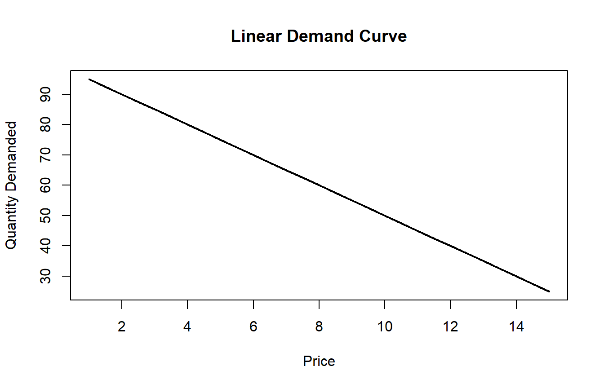
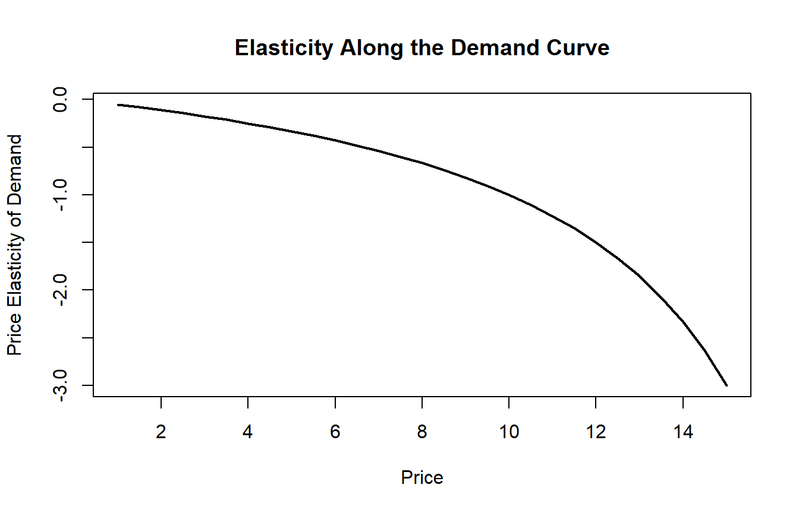
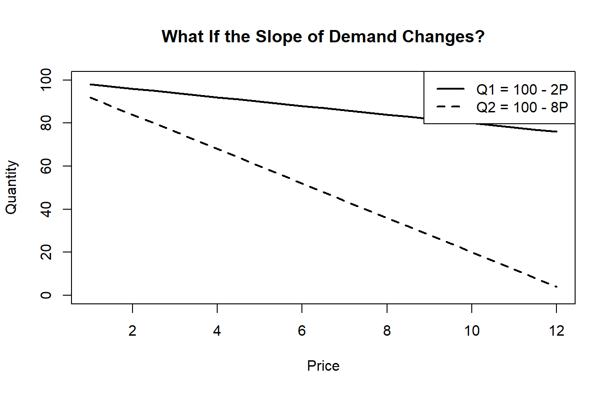
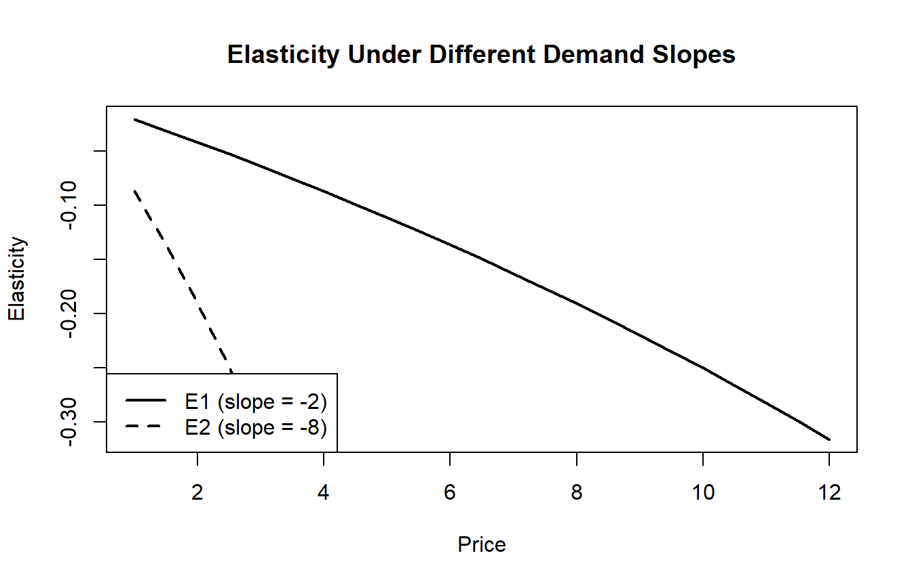
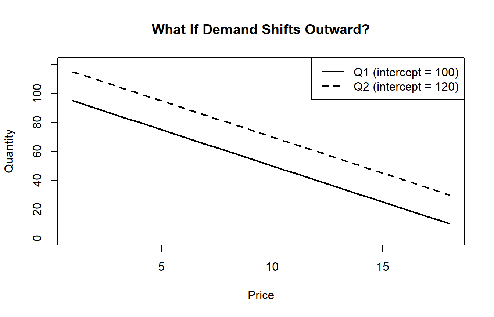
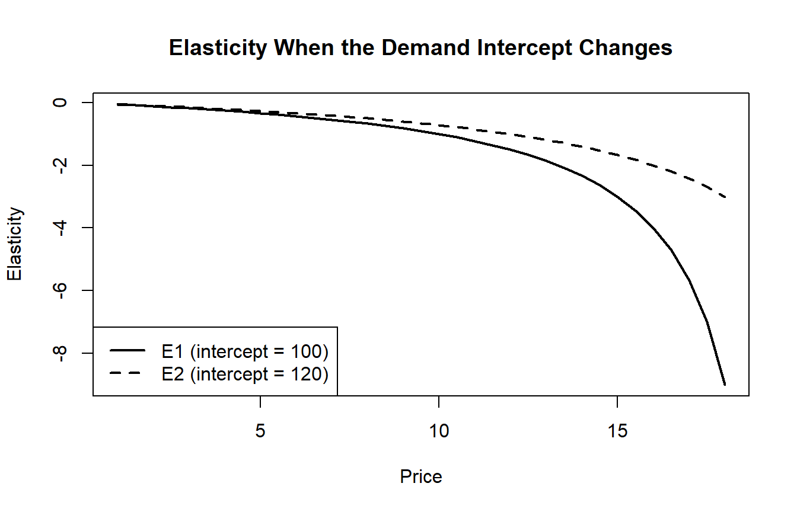
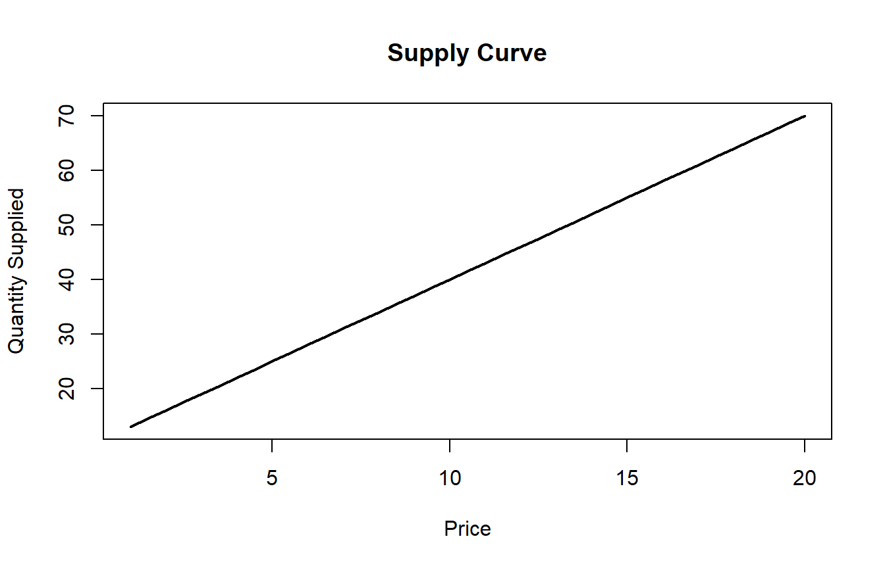
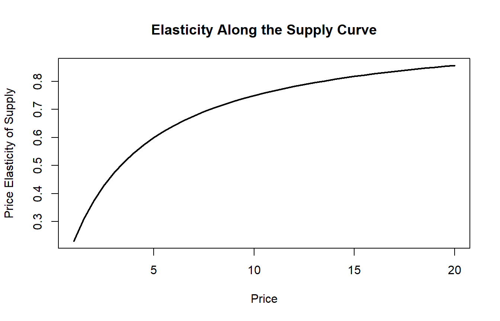

15 Part I. Elasticity: Calculations, “What If” Changes, and Visualization
15.1 What Elasticity Means
Elasticity measures responsiveness.
In economics, the most common elasticity is price elasticity of demand, which tells us:
If price changes, by how much does quantity demanded respond?
The standard formula is:
\[E_d = \frac{dQ}{dP} \cdot \frac{P}{Q}\]
For supply:
\[E_s = \frac{dQ}{dP} \cdot \frac{P}{Q}\]
The formula looks the same, but the interpretation differs:
- For demand, elasticity is usually negative because higher price lowers quantity demanded.
- For supply, elasticity is usually positive because higher price raises quantity supplied.
15.2 Elasticity When a Demand Curve Is Given
Suppose demand is:
\[Q = 100 - 5P\]
This is a linear demand curve.
What the equation means economically:
- The intercept is 100, so if price were zero, quantity demanded would be 100.
- The slope is \(-5\), so every 1-unit increase in price lowers quantity demanded by 5 units.
Key economics lesson: A constant slope does not mean constant elasticity.
15.3 Code: Plotting the Demand Curve and Elasticity
P <- seq(1, 15, by = 0.5)
Q <- 100 - 5 * P
elasticity <- (-5) * (P / Q)
plot(P, Q,
type = "l",
lwd = 2,
xlab = "Price",
ylab = "Quantity Demanded",
main = "Linear Demand Curve")
plot(P, elasticity,
type = "l",
lwd = 2,
xlab = "Price",
ylab = "Price Elasticity of Demand",
main = "Elasticity Along the Demand Curve")
15.4 Deep Code Explanation
Line 1: P <- seq(1, 15, by = 0.5)
Creates a vector of price values: \(1, 1.5, 2, 2.5, \ldots, 15\). A graph needs many values to look smooth. Economically, we are asking: What would quantity demanded be at many different prices?
Line 2: Q <- 100 - 5 * P
Computes quantity demanded for every value of P. R is vectorized — it applies the formula to the whole vector at once. This turns the demand equation into actual economic outcomes and demonstrates the law of demand.
Line 3: elasticity <- (-5) * (P / Q)
Computes the elasticity formula at every point along the demand curve. For \(Q = 100 - 5P\), we have \(dQ/dP = -5\), so:
\[E_d = -5 \cdot \frac{P}{Q}\]
Even though \(dQ/dP = -5\) is constant, the ratio \(P/Q\) changes as price changes — that is why elasticity varies along the curve.
Economics meaning: - At low prices and high quantities, demand tends to be less elastic. - At high prices and low quantities, demand tends to be more elastic.
15.5 “What If?” Elasticity Changes When the Demand Curve Changes
15.5.1 Example A: What If the Slope Changes?
Compare two demand curves:
\[Q_1 = 100 - 2P \quad \text{and} \quad Q_2 = 100 - 8P\]
P <- seq(1, 12, by = 0.5)
Q1 <- 100 - 2 * P
Q2 <- 100 - 8 * P
E1 <- (-2) * (P / Q1)
E2 <- (-8) * (P / Q2)
plot(P, Q1,
type = "l",
lwd = 2,
ylim = c(0, 100),
xlab = "Price",
ylab = "Quantity",
main = "What If the Slope of Demand Changes?")
lines(P, Q2, lwd = 2, lty = 2)
legend("topright", legend = c("Q1 = 100 - 2P", "Q2 = 100 - 8P"),
lty = c(1, 2), lwd = 2)
plot(P, E1,
type = "l",
lwd = 2,
xlab = "Price",
ylab = "Elasticity",
main = "Elasticity Under Different Demand Slopes")
lines(P, E2, lwd = 2, lty = 2)
legend("bottomleft", legend = c("E1 (slope = -2)", "E2 (slope = -8)"),
lty = c(1, 2), lwd = 2)
Notes:
Q2 <- 100 - 8 * P— quantity falls by 8 when price rises by 1 (more responsive).E2 <- (-8) * (P / Q2)— uses slope \(-8\) directly in the elasticity formula.lines(P, Q2, lwd = 2, lty = 2)— adds a second line to the existing graph.lty = 2gives a dashed style to distinguish the curves.ylim = c(0, 100)— controls the vertical range so both curves fit on the same graph.
Economic interpretation: A larger absolute slope means quantity changes more strongly when price changes — but elasticity still also depends on the \(P/Q\) ratio, so both slope and location on the curve matter.
15.5.2 Example B: What If the Intercept Changes?
Compare:
\[Q_1 = 100 - 5P \quad \text{and} \quad Q_2 = 120 - 5P\]
These have the same slope but different intercepts — a parallel shift in demand.
P <- seq(1, 18, by = 0.5)
Q1 <- 100 - 5 * P
Q2 <- 120 - 5 * P
E1 <- (-5) * (P / Q1)
E2 <- (-5) * (P / Q2)
plot(P, Q1,
type = "l",
lwd = 2,
ylim = c(0, 120),
xlab = "Price",
ylab = "Quantity",
main = "What If Demand Shifts Outward?")
lines(P, Q2, lwd = 2, lty = 2)
legend("topright", legend = c("Q1 (intercept = 100)", "Q2 (intercept = 120)"),
lty = c(1, 2), lwd = 2)
plot(P, E1,
type = "l",
lwd = 2,
xlab = "Price",
ylab = "Elasticity",
main = "Elasticity When the Demand Intercept Changes")
lines(P, E2, lwd = 2, lty = 2)
legend("bottomleft", legend = c("E1 (intercept = 100)", "E2 (intercept = 120)"),
lty = c(1, 2), lwd = 2)
Economics interpretation: An outward shift changes quantity at each price. Since elasticity includes \(Q\) in the denominator:
\[E = \frac{dQ}{dP} \cdot \frac{P}{Q}\]
the same slope can produce different elasticities if quantity differs.
Two demand curves can have the same slope and still have different elasticities.
15.6 Elasticity When a Supply Curve Is Given
Suppose supply is \(Q = 10 + 3P\). Then \(dQ/dP = 3\) and:
\[E_s = 3 \cdot \frac{P}{Q}\]
P <- seq(1, 20, by = 0.5)
Q <- 10 + 3 * P
elasticity <- 3 * (P / Q)
plot(P, Q,
type = "l",
lwd = 2,
xlab = "Price",
ylab = "Quantity Supplied",
main = "Supply Curve")
plot(P, elasticity,
type = "l",
lwd = 2,
xlab = "Price",
ylab = "Price Elasticity of Supply",
main = "Elasticity Along the Supply Curve")
The code structure is exactly like the demand example, but now the derivative is positive — because supply curves slope upward. Responsiveness can still vary along the supply curve even when the slope is constant.